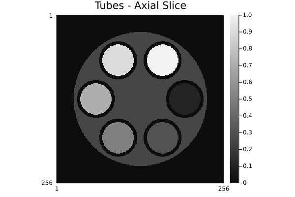
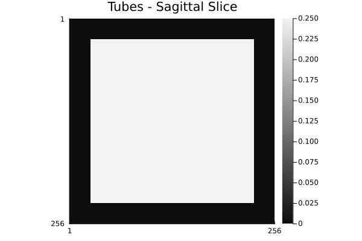
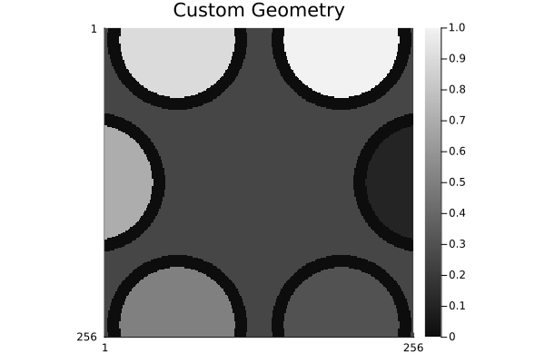

Tubes Phantom
The Tubes phantom is a geometric validation phantom consisting of concentric cylinders and tubes. It provides a simple, highly controlled test case for validating imaging methods, quality assurance procedures, and reconstruction algorithms. The phantom's geometric simplicity and precise mathematical definition make it ideal for testing resolution, uniformity, and artifact detection.
Purpose and Use Cases
The Tubes phantom is particularly useful for:
- Resolution assessment: Measure point spread function and edge sharpness
- Linearity testing: Verify accurate intensity representation across the phantom
- Artifact detection: Identify system-related artifacts independent of anatomical complexity
- Method validation: Test new reconstruction algorithms on simple, well-defined geometry
- Quality control: Routine scanner and processing validation
Example Use Case: Multi-Echo MRI
A notable use case for the tubes phantom is to simulate multi-echo MRI images, where the filling of each tube has different T1 and T2 relaxation constants. This allows testing T1/T2 mapping algorithms and analyzing signal decay across echoes in a controlled environment.
Unlike anatomical phantoms, the Tubes phantom has a minimal number of tissues and well-defined geometric boundaries, making it easier to interpret results and attribute them to specific system components.
Basic Usage
Default Configuration
Create a default Tubes phantom with standard geometry and intensities:
# Create 3D phantom (outer cylinder with concentric tubes inside)
phantom_3d = create_tubes_phantom(256, 256, 256)
jim(phantom_3d[:, :, div(end, 2)]; title="Tubes Phantom - Middle Slice")
2D Slices
Generate 2D slices at different orientations:
# Axial slice
phantom_axial = create_tubes_phantom(256, 256, :axial)
jim(phantom_axial; title="Tubes - Axial Slice")
# Coronal slice
phantom_coronal = create_tubes_phantom(256, 256, :coronal)
jim(phantom_coronal; title="Tubes - Coronal Slice")
# Sagittal slice
phantom_sagittal = create_tubes_phantom(256, 256, :sagittal)
jim(phantom_sagittal; title="Tubes - Sagittal Slice")
Spatial Slicing
View the phantom from all three orthogonal planes:
using Plots
# Create 3D phantom
phantom_3d = create_tubes_phantom(128, 128, 128)
nx, ny, nz = size(phantom_3d)
# Extract center slices
axial = phantom_3d[:, :, div(nz, 2)]
coronal = phantom_3d[:, div(ny, 2), :]
sagittal = phantom_3d[div(nx, 2), :, :]
# Plot all planes
p1 = heatmap(axial', title="Axial", aspect_ratio=1, color=:grays, axis=false)
p2 = heatmap(coronal', title="Coronal", aspect_ratio=1, color=:grays, axis=false)
p3 = heatmap(sagittal', title="Sagittal", aspect_ratio=1, color=:grays, axis=false)
plot(p1, p2, p3, layout=(1,3), size=(900, 300))
Geometry Customization
Modify the phantom's geometric properties to suit your needs:
# Create custom geometry
custom_geometry = TubesGeometry(
outer_radius=0.8, # Outer cylinder radius in cm (default: 0.4)
outer_height=2.0, # Outer cylinder height in cm (default: 0.8)
tubes_height_fraction=0.9, # Tubes height as fraction of outer height
tube_wall_thickness=0.025, # Wall thickness (default: 0.025)
gap_fraction=0.3 # Gap between tubes (default: 0.3)
)
phantom_custom_geom = create_tubes_phantom(256, 256, 256; tg=custom_geometry)
jim(phantom_custom_geom[:, :, div(end, 2)]; title="Custom Geometry")
Intensity Customization
Adjust tissue intensities to match your imaging protocol:
# Default intensities
custom_intensities = TubesIntensities(
outer_cylinder=0.25,
tube_wall=0.0,
tube_fillings=[0.2, 0.4, 0.6, 0.8, 1.0] # Different intensity for each tube
)
phantom_custom_intensity = create_tubes_phantom(256, 256, 256; ti=custom_intensities)
jim(phantom_custom_intensity[:, :, div(end, 2)]; title="Custom Intensities")
Multi-Frame Stack Generation
Create phantoms with multiple intensity levels for sensitivity or linearity testing:
# Create stack with different intensity variations
intensity_stack = [
TubesIntensities(outer_cylinder=0.1, tube_fillings=[0.05, 0.1, 0.15, 0.2, 0.25]),
TubesIntensities(outer_cylinder=0.25, tube_fillings=[0.1, 0.2, 0.3, 0.4, 0.5]),
TubesIntensities(outer_cylinder=0.5, tube_fillings=[0.2, 0.4, 0.6, 0.8, 1.0]),
TubesIntensities(outer_cylinder=0.75, tube_fillings=[0.3, 0.6, 0.9, 1.2, 1.5])
]
phantom_stack = create_tubes_phantom(256, 256, 256; ti=intensity_stack)
# Stack has shape (256, 256, 256, 4) - 4 different intensity configurations
println("Stack shape: $(size(phantom_stack))")
# Visualize each frame
for i in 1:size(phantom_stack, 4)
frame = phantom_stack[:, :, div(end, 2), i]
println("Frame $i - Min: $(round(minimum(frame), digits=3)), Max: $(round(maximum(frame), digits=3))")
endStack shape: (256, 256, 256, 4)
Frame 1 - Min: 0.0, Max: 0.25
Frame 2 - Min: 0.0, Max: 0.5
Frame 3 - Min: 0.0, Max: 1.0
Frame 4 - Min: 0.0, Max: 1.5This creates a 4D array where each 3D volume represents a phantom with different intensities, useful for testing linearity across a range of signal magnitudes.
Advanced Applications
Linearity Testing
Use the multi-frame stack to test signal linearity:
using Statistics
# Create phantoms with proportional intensities
intensities_linear = [
TubesIntensities(outer_cylinder=i*0.1, tube_fillings=fill(i*0.1, 6))
for i in 1:10
]
phantom_linearity = create_tubes_phantom(256, 256, 256; ti=intensities_linear)
# Measure mean signal in each frame
mean_signals = [mean(phantom_linearity[:, :, div(end, 2), i]) for i in 1:10]
# Plot linearity
plot(1:10, mean_signals,
xlabel="Intensity Scale Factor",
ylabel="Measured Signal",
title="Linearity Test",
legend=false)
Resolution Assessment
Examine fine details at different resolution levels:
# Low resolution (fast to compute, useful for quick tests)
tubes_64 = create_tubes_phantom(64, 64, 64)
# Medium resolution
tubes_256 = create_tubes_phantom(256, 256, 256)
# High resolution (slow but maximum detail)
tubes_512 = create_tubes_phantom(512, 512, 512)
p1 = jim(tubes_64[:, :, div(end, 2)]; title="64×64×64")
p2 = jim(tubes_256[:, :, div(end, 2)]; title="256×256×256")
p3 = jim(tubes_512[:, :, div(end, 2)]; title="512×512×512")
plot(p1, p2, p3, layout=(1,3), size=(1200,300))